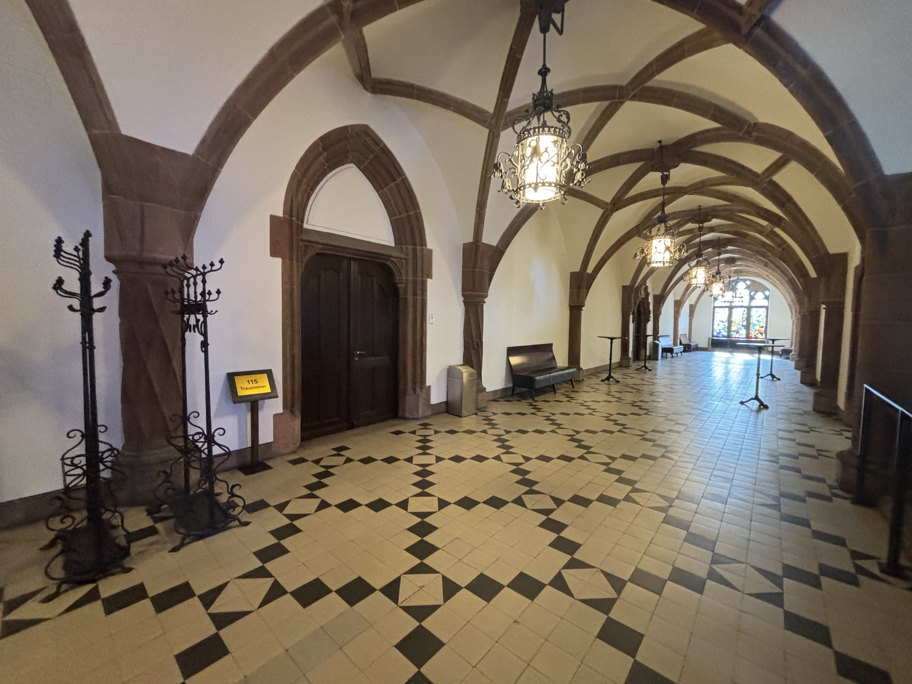

Thursday, August 22nd
Official Ceremony
We will be getting married officially in the city hall in room 115 (on the 1st floor). The official ceremony is from 2:30 pm to 3:00 pm. Please try to be in the foyer of the Ceremony Room at least 15 minutes before the start time and preferably at 2 pm, such that the ceremony can start on time. The ceremony will take place in German with Polish translation. After the official ceremony, guests have to leave the room and gather in front of the Rathaus (please see the first picture shown below). The couple and witnesses will remain in the room for a few more minutes before joining the guests. The tight schedule is due to the fact that there is another wedding ceremony before and after ours.
2:00 pm - 3:00 pm (ceremony starts at 2:30 pm sharp)
City Hall
Festive Attire
We will come to the Rathaus St. Johann before 2:00 pm. We will entering the Rathaus at 2:00 pm. This is the picture of the place in front of the Rathaus:
Then, we will go to the foyer at 2 pm. Please, enter the Rathaus through the main door and follow the stairs to the 1st floor, as shown in the photo below.
The photo below shows the foyer in front of the Ceremony Room 115 where guest can gather from 2 pm to 2:30 pm before the ceremony. The door to the ceremony will be closed at 2:30 pm (sharp) so please come to the foyer on time, preferably at 2 pm. Let's keep the first row open for family at the Standesamt.

Once the couple and witnesses join the guests in the square in front of the Rathaus, the guests can use the soap bubbles from their gift bags. Note that the soap bubbles can be used on the square in front of the Rathaus but not on the stairs (these are the rules from the Rathaus). In the case of rain, guests can directly go to the castle (Saarbrücken Schloss) by following the instructions below.
If you come by car, you can use the car park (Q-Park), which is located directly next to the Rathaus.
Walk to the Venue
We will be walking together from the city hall to the venue through the old town. Just a heads-up: it's a cobbled street, so walking in high heels might be tricky. We recommend switching to flat shoes (flats) for this bit!
You can open this link in Google Maps to see the precise directions.
3:00 pm - 3:30 pm
City Hall to the Castle (Saarbrücken Schloss)
Welcome Reception, Drinks, and Photos
Shall the weather permit, we will have a welcome reception with drinks at the terrace next to the castle overlooking the city of Saarbrücken (otherwise, we'll be in the Ballroom of the Castle on the 3rd floor).
While everyone is enjoying the views and the drinks, we will be taking photos with different groups of people. You will be also playing the BINGO game about other guests and once you have all your answers you can find Karla Pizzi to check your answers.
3:30 pm - 4:30 pm
Terrace behind the Saarbrücken Castle (next to the Tourist Information Saarbrücker Schloss)
Photos for Newlyweds
Photos for Adam and Franzi with a photographer
3:45 pm - 4:30 pm
Terrace behind the Saarbrücken Castle
Group Photos with All Guests
We will be taking the photo with all our Guests. Make sure to join us when it’s time for the group photo!
4:30 pm - 5:00 pm
Terrace next to Saarbrücken Castle
Welcome Words
After we're done with the photos, we'll move into the ballroom where we're going to open the party and the bar with some welcome words. Speeches: Guest Intro by Adam and Franzi, Łukasz (best man), Sue (bridesmaid).
5:00pm
Saarbrücken Castle Ballroom
Dinner
To accomodate for everyone's personal food preferences and requirements, we decided to serve dinner in buffet form.
We'll be serving the following food:
Appetizer
Marinated duck breast on mango chutney
Juniper-smoked trout on avocado chia seed tartare
Dim Sum (Gyoza pockets on Asian salad)
Pulled porc with sour cream topping
Red wine figs with gorgonzola cream
Spinach cream under red wine butter
Norwegian smoked salmon, trout fillets and scallop terrine
Salmon carpaccio
Coconut carrot potbourri
Entrée
St. Pierre on truffled spinach leaves
Corn pudding breast with porcini mushrooms
Venison medallions in chocolate chili sauce
Spinach dumplings on tomato ragout
Snowballs and rosemary potatoes
Colorful fresh vegetables
Desert
Basil curd with balsamic strawberries
Thyme panna cotta with herb honey and raspberry espuma
Tiramisu
5:30pm
Saarbrücken Castle Ballroom
Thank you to Parents and Parents' Speeches
We will take a moment to express our deepest gratitude to our parents.
6:30 pm - 7:00 pm
Saarbrücken Castle Ballroom
Wedding Party
After a few speaches, and thank you words, we will start the party with our international live band. Adam and Franzi will open the dance floor.
We'll be dancing, chatting, cutting some wedding cake and hope that nobody will get tired ;)
7:00pm onwards
Saarbrücken Castle Ballroom
Wedding Cake
We will enjoy a special wedding cake.
9:00 pm - 9:30 pm
Saarbrücken Castle
Wedding bouquet toss / Oczepiny
Modern-day oczepiny feature party games for all the guests, including tossing the bouquet and bow tie, musical chairs, and more.
9:30 pm - 10:00 pm
Saarbrücken Castle
Party
Even more dancing, chatting, and entartainment with our band!
10:00 pm - 3:00 am
Saarbrücken Castle